Note
Click here to download the full example code
Draft - new tutorial.ipynb
Automatically generated by Colaboratory.
- Original file is located at
- https://colab.research.google.com/drive/1autKkGJocPQZmajnHogMa74_uwBSU34c
# Audio manipulation with torchaudio torchaudio provides powerful audio I/O mechanism, preprocessing transforms, dataset and models
- 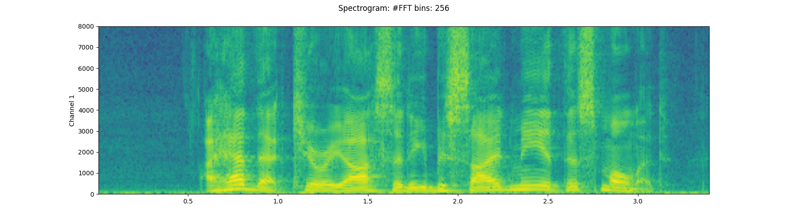
- 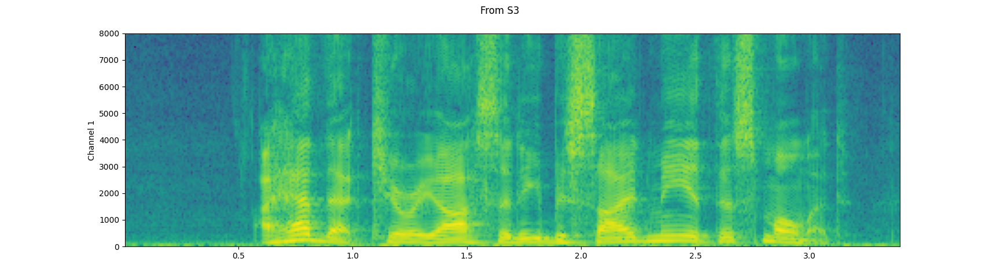
- 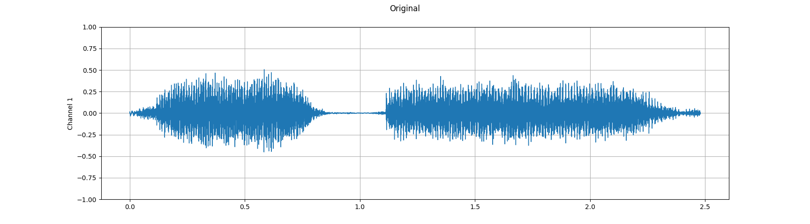
- 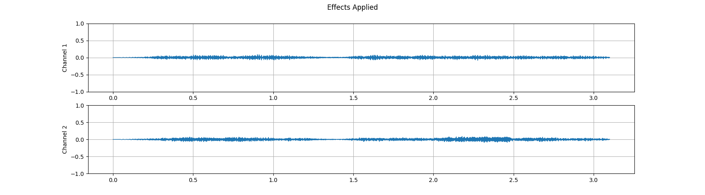
- 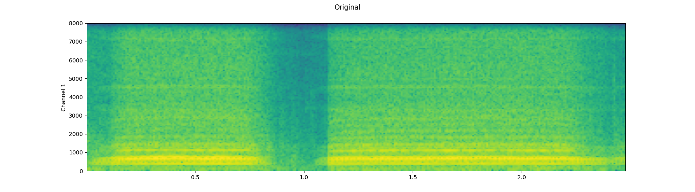
- 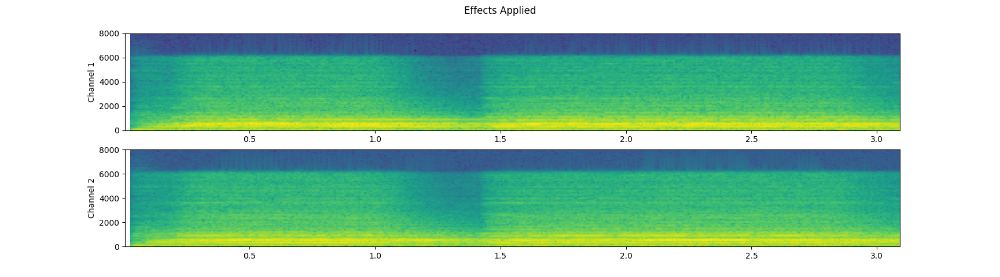
- 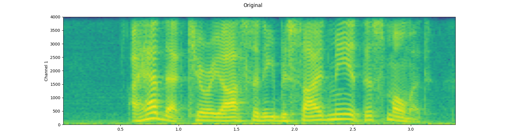
- 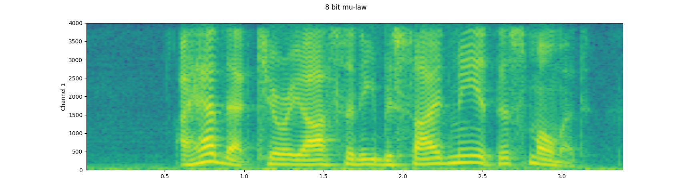
- 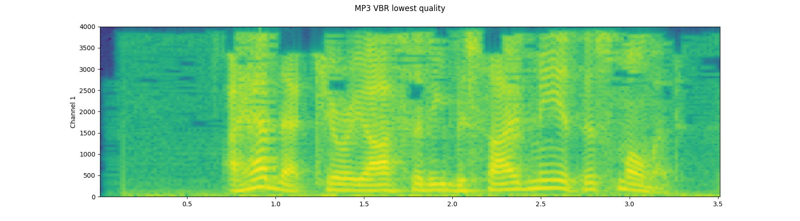
- 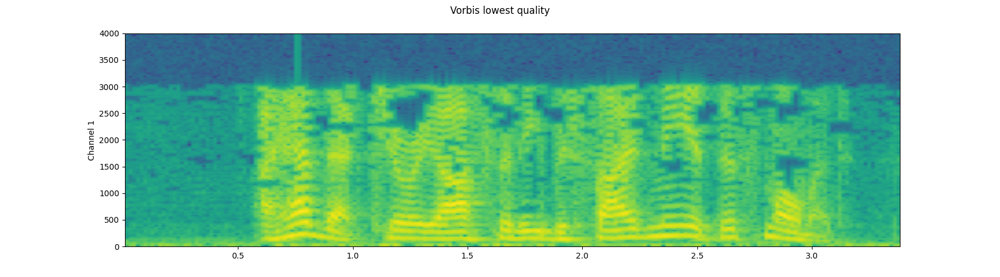
- 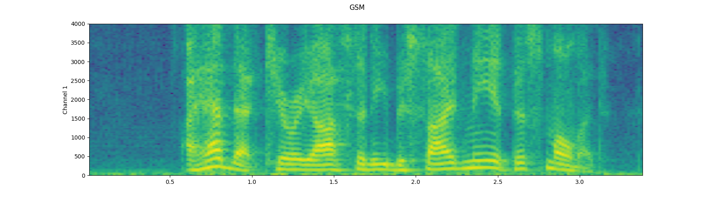
- 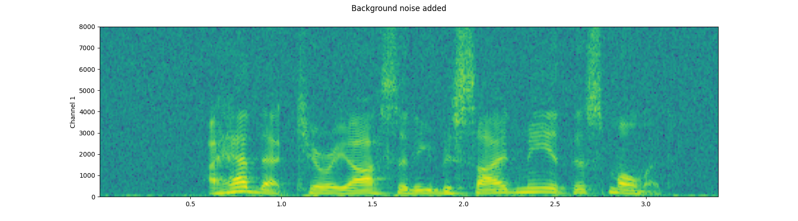
- 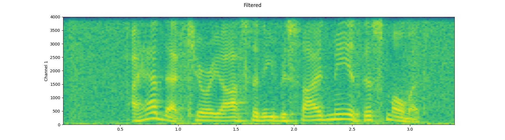
- 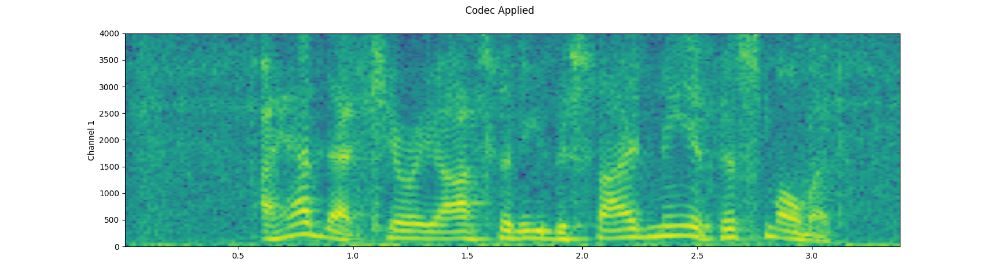
- 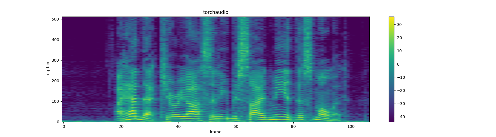
- 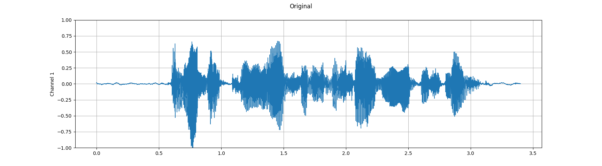
- 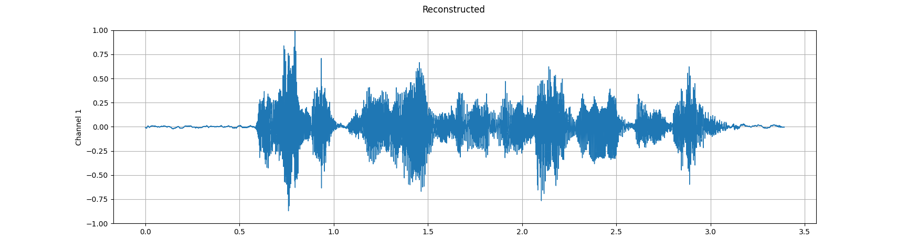
- 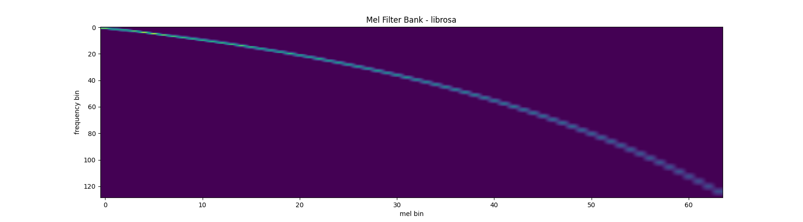
- 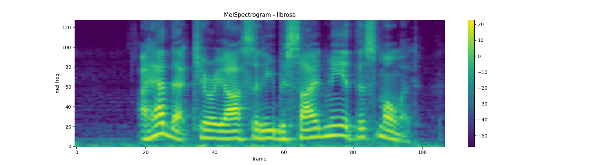
- 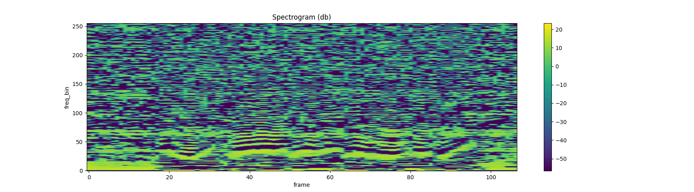
- 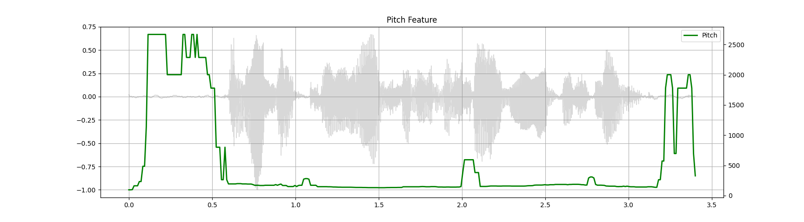
- 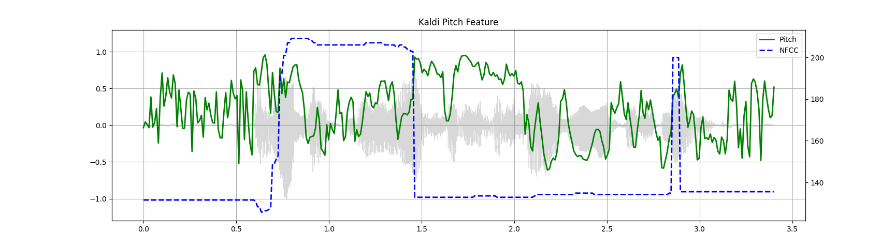
- 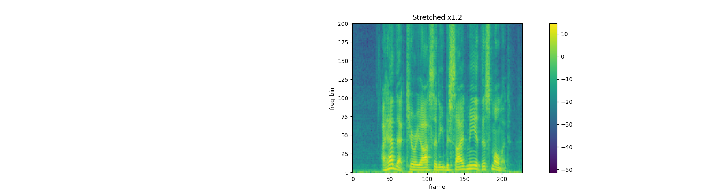
- 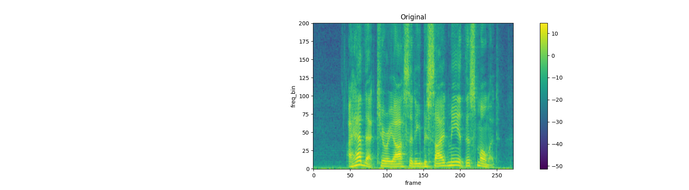
- 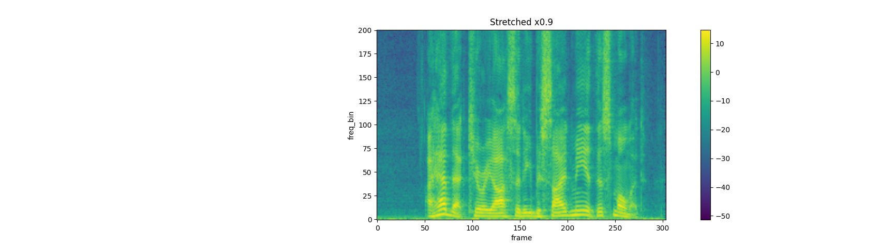
- 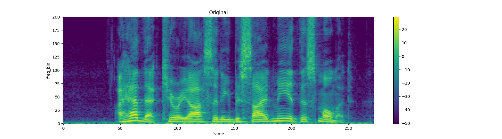
- 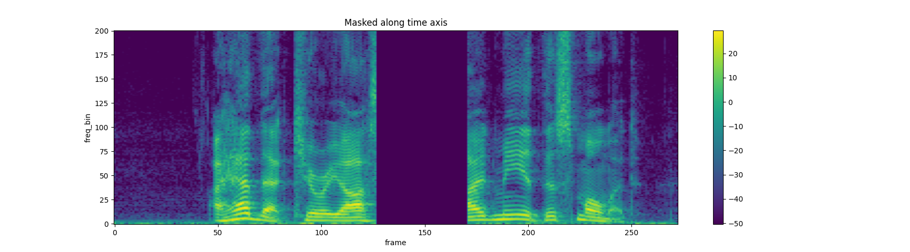

- 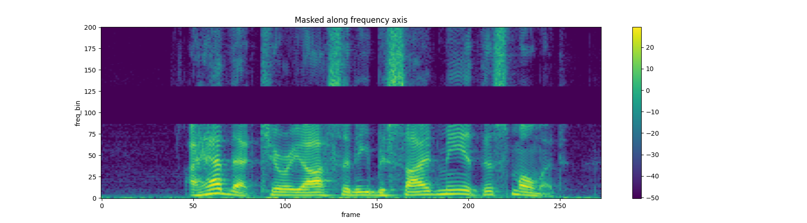
- 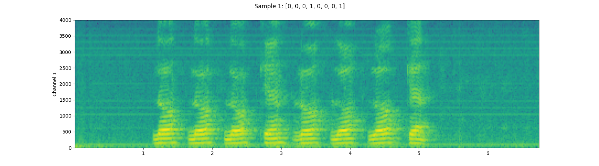
- 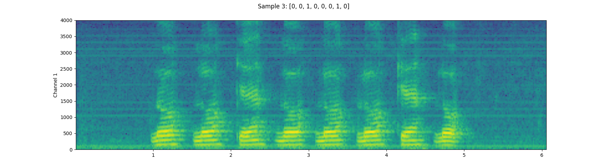
- 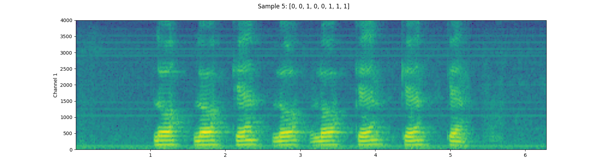
Out:
1.8.1+cpu
0.8.1
----------
Source: _sample.wav
----------
- sample_rate: 44100
- num_channels: 2
- num_frames: 109368
- bits_per_sample: 16
- encoding: PCM_S
----------
Source: _sample.mp3
----------
- sample_rate: 44100
- num_channels: 2
- num_frames: 110559
- bits_per_sample: 0
- encoding: MP3
----------
Source: https://pytorch-tutorial-assets.s3.amazonaws.com/steam-train-whistle-daniel_simon.wav
----------
- sample_rate: 44100
- num_channels: 2
- num_frames: 109368
- bits_per_sample: 16
- encoding: PCM_S
Fetched 4096 bytes.
----------
Source: https://pytorch-tutorial-assets.s3.amazonaws.com/steam-train-whistle-daniel_simon.mp3
----------
- sample_rate: 44100
- num_channels: 2
- num_frames: 0
- bits_per_sample: 0
- encoding: MP3
Sample Rate: 16000
Shape: (1, 54400)
Dtype: torch.float32
- Max: 0.668
- Min: -1.000
- Mean: 0.000
- Std Dev: 0.122
tensor([[0.0183, 0.0180, 0.0180, ..., 0.0018, 0.0019, 0.0032]])
<IPython.lib.display.Audio object>
Fetching all the data...
- Fetched 108844 bytes
Fetching until the requested frames are available...
- Fetched 65580 bytes
Checking the resulting waveform ... matched!
Sample Rate: 44100
Shape: (1, 109368)
Dtype: torch.float32
- Max: 0.508
- Min: -0.449
- Mean: -0.000
- Std Dev: 0.122
tensor([[0.0027, 0.0063, 0.0092, ..., 0.0032, 0.0047, 0.0052]])
----------
Source: save_example_default.wav
----------
- File size: 437530 bytes
- sample_rate: 44100
- num_channels: 1
- num_frames: 109368
- bits_per_sample: 32
- encoding: PCM_F
----------
Source: save_example_PCM_S16.wav
----------
- File size: 218780 bytes
- sample_rate: 44100
- num_channels: 1
- num_frames: 109368
- bits_per_sample: 16
- encoding: PCM_S
----------
Source: save_example.mp3
----------
- File size: 20062 bytes
- sample_rate: 44100
- num_channels: 1
- num_frames: 110559
- bits_per_sample: 0
- encoding: MP3
----------
Source: save_example.flac
----------
- File size: 118673 bytes
- sample_rate: 44100
- num_channels: 1
- num_frames: 109368
- bits_per_sample: 24
- encoding: FLAC
----------
Source: save_example.vorbis
----------
- File size: 24365 bytes
- sample_rate: 44100
- num_channels: 1
- num_frames: 109368
- bits_per_sample: 0
- encoding: VORBIS
----------
Source: save_example.sph
----------
- File size: 438496 bytes
- sample_rate: 44100
- num_channels: 1
- num_frames: 109368
- bits_per_sample: 32
- encoding: PCM_S
----------
Source: save_example.amb
----------
- File size: 437530 bytes
- sample_rate: 44100
- num_channels: 1
- num_frames: 109368
- bits_per_sample: 32
- encoding: PCM_F
----------
Source: save_example.amr-nb
----------
- File size: 5666 bytes
- sample_rate: 8000
- num_channels: 1
- num_frames: 109440
- bits_per_sample: 0
- encoding: AMR_NB
----------
Source: save_example.gsm
----------
- File size: 22572 bytes
- sample_rate: 8000
- num_channels: 1
- num_frames: 0
- bits_per_sample: 0
- encoding: GSM
b'RIFF\x12\xad\x06\x00WAVEfmt '
----------
Source: Original
----------
Sample Rate: 16000
Shape: (1, 39680)
Dtype: torch.float32
- Max: 0.506
- Min: -0.452
- Mean: -0.000
- Std Dev: 0.122
tensor([[ 0.0030, 0.0104, 0.0128, ..., -0.0038, -0.0012, 0.0039]])
----------
Source: Effects Applied
----------
Sample Rate: 16000
Shape: (2, 49600)
Dtype: torch.float32
- Max: 0.091
- Min: -0.090
- Mean: -0.000
- Std Dev: 0.021
tensor([[0.0000, 0.0000, 0.0000, ..., 0.0064, 0.0052, 0.0037],
[0.0000, 0.0000, 0.0000, ..., 0.0085, 0.0085, 0.0085]])
<IPython.lib.display.Audio object>
<IPython.lib.display.Audio object>
<IPython.lib.display.Audio object>
<IPython.lib.display.Audio object>
<IPython.lib.display.Audio object>
<IPython.lib.display.Audio object>
<IPython.lib.display.Audio object>
<IPython.lib.display.Audio object>
<IPython.lib.display.Audio object>
<IPython.lib.display.Audio object>
<IPython.lib.display.Audio object>
Shape: (1, 513, 107)
Dtype: torch.float32
- Max: 4000.533
- Min: 0.000
- Mean: 5.726
- Std Dev: 70.301
tensor([[[7.8743e+00, 4.4462e+00, 5.6781e-01, ..., 2.7694e+01,
8.9546e+00, 4.1289e+00],
[7.1094e+00, 3.2595e+00, 7.3520e-01, ..., 1.7141e+01,
4.4812e+00, 8.0840e-01],
[3.8374e+00, 8.2490e-01, 3.0779e-01, ..., 1.8502e+00,
1.1777e-01, 1.2369e-01],
...,
[3.4708e-07, 1.0604e-05, 1.2395e-05, ..., 7.4090e-06,
8.2063e-07, 1.0176e-05],
[4.7173e-05, 4.4329e-07, 3.9444e-05, ..., 3.0622e-05,
3.9735e-07, 8.1572e-06],
[1.3221e-04, 1.6440e-05, 7.2536e-05, ..., 5.4662e-05,
1.1663e-05, 2.5758e-06]]])
<IPython.lib.display.Audio object>
<IPython.lib.display.Audio object>
Mean Square Difference: 3.795462323290159e-17
Mean Square Difference: 1.171839292268828e-10
Mean Square Difference: 4.254469487818824e-08
<IPython.lib.display.Audio object>
<IPython.lib.display.Audio object>
<IPython.lib.display.Audio object>
<IPython.lib.display.Audio object>
<IPython.lib.display.Audio object>
# ***************************************
# RUN THIS CELL ONCE, COMMENT OUT THEM AND RESTART THE RUNTIME TO GET THE TORCHAUDIO RC
# This is required until 0.8 is released.
# warnings and errors are safe to ignore
# ***************************************
# !pip install --pre --ignore-installed torch torchaudio -f https://download.pytorch.org/whl/test/cpu/torch_test.html
# !pip install boto3 requests
import torch
import torchaudio
import torchaudio.functional as F
import torchaudio.transforms as T
print(torch.__version__)
print(torchaudio.__version__)
"""# Preparation"""
#@title Prepare data and utility functions. {display-mode: "form"}
#@markdown
#@markdown You do not need to look into this cell.
#@markdown Just execute once and you are good to go.
#@markdown
#@markdown In this tutorial, we will use a speech data from [VOiCES dataset](https://iqtlabs.github.io/voices/), which is licensed under Creative Commos BY 4.0.
#-------------------------------------------------------------------------------
# Preparation of data and helper functions.
#-------------------------------------------------------------------------------
import io
import os
import tarfile
import multiprocessing
import scipy
import librosa
import boto3
from botocore import UNSIGNED
from botocore.config import Config
import requests
import matplotlib
import matplotlib.pyplot as plt
from IPython.display import Audio, display
[width, height] = matplotlib.rcParams['figure.figsize']
matplotlib.rcParams['figure.figsize'] = [width * 2.7, height]
SAMPLE_WAV_URL = "https://pytorch-tutorial-assets.s3.amazonaws.com/steam-train-whistle-daniel_simon.wav"
SAMPLE_WAV_PATH = "_sample.wav"
SAMPLE_WAV_SPEECH_URL = "https://pytorch-tutorial-assets.s3.amazonaws.com/VOiCES_devkit/source-16k/train/sp0307/Lab41-SRI-VOiCES-src-sp0307-ch127535-sg0042.wav"
SAMPLE_WAV_SPEECH_PATH = "_sample_speech.wav"
SAMPLE_MP3_URL = "https://pytorch-tutorial-assets.s3.amazonaws.com/steam-train-whistle-daniel_simon.mp3"
SAMPLE_MP3_PATH = "_sample.mp3"
SAMPLE_TAR_URL = "https://pytorch-tutorial-assets.s3.amazonaws.com/VOiCES_devkit.tar.gz"
SAMPLE_TAR_PATH = "_sample.tar.gz"
SAMPLE_TAR_ITEM = "VOiCES_devkit/source-16k/train/sp0307/Lab41-SRI-VOiCES-src-sp0307-ch127535-sg0042.wav"
S3_BUCKET = "pytorch-tutorial-assets"
S3_KEY = "VOiCES_devkit/source-16k/train/sp0307/Lab41-SRI-VOiCES-src-sp0307-ch127535-sg0042.wav"
YESNO_DATASET_PATH = "./_dataset/yes_no"
LJSPEECH_DATASET_PATH = "./_dataset/ljspeech"
os.makedirs(YESNO_DATASET_PATH, exist_ok=True)
os.makedirs(LJSPEECH_DATASET_PATH, exist_ok=True)
def _fetch_data():
uri = [
(SAMPLE_WAV_URL, SAMPLE_WAV_PATH),
(SAMPLE_WAV_SPEECH_URL, SAMPLE_WAV_SPEECH_PATH),
(SAMPLE_MP3_URL, SAMPLE_MP3_PATH),
(SAMPLE_TAR_URL, SAMPLE_TAR_PATH),
]
for url, path in uri:
with open(path, 'wb') as file_:
file_.write(requests.get(url).content)
_fetch_data()
def _download_yesno():
if os.path.exists(os.path.join(YESNO_DATASET_PATH, "waves_yesno.tar.gz")):
return
torchaudio.datasets.YESNO(root=YESNO_DATASET_PATH, download=True)
def _download_ljspeech():
if os.path.exists(os.path.join(LJSPEECH_DATASET_PATH, "LJSpeech-1.1.tar.bz2")):
return
torchaudio.datasets.LJSPEECH(root=LJSPEECH_DATASET_PATH, download=True)
YESNO_DOWNLOAD_PROCESS = multiprocessing.Process(target=_download_yesno)
YESNO_DOWNLOAD_PROCESS.start()
LJSPEECH_DOWNLOAD_PROCESS = multiprocessing.Process(target=_download_ljspeech)
LJSPEECH_DOWNLOAD_PROCESS.start()
def _get_sample(path, resample=None):
if resample:
waveform, sample_rate = torchaudio.sox_effects.apply_effects_file(
path, effects=[["rate", f'{resample}']])
else:
waveform, sample_rate = torchaudio.load(path)
waveform = waveform[:1, ...]
return waveform, sample_rate
def get_speech_sample(*, resample=None):
return _get_sample(SAMPLE_WAV_SPEECH_PATH, resample=resample)
def get_sample(*, resample=None):
return _get_sample(SAMPLE_WAV_PATH, resample=resample)
def print_metadata(metadata, src=None):
if src:
print("-" * 10)
print("Source:", src)
print("-" * 10)
print(" - sample_rate:", metadata.sample_rate)
print(" - num_channels:", metadata.num_channels)
print(" - num_frames:", metadata.num_frames)
print(" - bits_per_sample:", metadata.bits_per_sample)
print(" - encoding:", metadata.encoding)
print()
def print_stats(waveform, sample_rate=None, src=None):
if src:
print("-" * 10)
print("Source:", src)
print("-" * 10)
if sample_rate:
print("Sample Rate:", sample_rate)
print("Shape:", tuple(waveform.shape))
print("Dtype:", waveform.dtype)
print(f" - Max: {waveform.max().item():6.3f}")
print(f" - Min: {waveform.min().item():6.3f}")
print(f" - Mean: {waveform.mean().item():6.3f}")
print(f" - Std Dev: {waveform.std().item():6.3f}")
print()
print(waveform)
print()
def plot_waveform(waveform, sample_rate, title="waveform"):
waveform = waveform.numpy()
num_channels, num_frames = waveform.shape
time_axis = torch.arange(0, num_frames) / sample_rate
figure, axes = plt.subplots(num_channels, 1)
if num_channels == 1:
axes = [axes]
for c in range(num_channels):
axes[c].plot(time_axis, waveform[c], linewidth=1)
axes[c].grid(True)
axes[c].set_ylim((-1.0, 1.0))
axes[c].set_ylabel(f'Channel {c+1}')
figure.suptitle(title)
plt.show(block=False)
return figure, axes
def plot_specgram(waveform, sample_rate, title=None, n_fft=256):
waveform = waveform.numpy()
num_channels, num_frames = waveform.shape
time_axis = torch.arange(0, num_frames) / sample_rate
figure, axes = plt.subplots(num_channels, 1)
if num_channels == 1:
axes = [axes]
for c in range(num_channels):
axes[c].specgram(waveform[c], Fs=sample_rate, NFFT=n_fft)
axes[c].set_ylabel(f'Channel {c+1}')
figure.suptitle(title or f"Spectrogram: #FFT bins: {n_fft}")
plt.show(block=False)
def play_audio(waveform, sample_rate):
waveform = waveform.numpy()
num_channels, num_frames = waveform.shape
if num_channels == 1:
display(Audio(waveform[0], rate=sample_rate))
elif num_channels == 2:
display(Audio((waveform[0], waveform[1]), rate=sample_rate))
else:
raise ValueError("Waveform with more than 2 channels are not supported.")
def inspect_file(path):
print("-" * 10)
print("Source:", path)
print("-" * 10)
print(f" - File size: {os.path.getsize(path)} bytes")
print_metadata(torchaudio.info(path))
def plot_spectrogram(spec, title=None, ylabel='freq_bin', aspect='auto'):
fig, axs = plt.subplots(1, 1)
axs.set_title(title or 'Spectrogram (db)')
axs.set_ylabel(ylabel)
axs.set_xlabel('frame')
im = axs.imshow(librosa.power_to_db(spec), origin='lower', aspect=aspect)
fig.colorbar(im, ax=axs)
plt.show(block=False)
def plot_mel_fbank(fbank, title=None):
fig, axs = plt.subplots(1, 1)
axs.set_title(title or 'Filter bank')
axs.imshow(fbank, aspect='auto')
axs.set_ylabel('frequency bin')
axs.set_xlabel('mel bin')
plt.show(block=False)
def get_spectrogram(
n_fft = 400,
win_len = None,
hop_len = None,
power = 2.0,
):
waveform, _ = get_speech_sample()
spectrogram = T.Spectrogram(
n_fft=n_fft,
win_length=win_len,
hop_length=hop_len,
center=True,
pad_mode="reflect",
power=power,
)
return spectrogram(waveform)
def plot_pitch(waveform, sample_rate, pitch):
figure, axis = plt.subplots(1, 1)
axis.set_title("Pitch Feature")
axis.grid(True)
end_time = waveform.shape[1] / sample_rate
time_axis = torch.linspace(0, end_time, waveform.shape[1])
axis.plot(time_axis, waveform[0], linewidth=1, color='gray', alpha=0.3)
# time_axis = torch.linspace(0, end_time, pitch.shape[1])
# ln1 = axis.plot(time_axis, pitch[0], linewidth=2, label='Pitch', color='green')
# axis.set_ylim((-1.3, 1.3))
axis2 = axis.twinx()
time_axis = torch.linspace(0, end_time, pitch.shape[1])
ln2 = axis2.plot(
time_axis, pitch[0], linewidth=2, label='Pitch', color='green')
axis2.legend(loc=0)
plt.show(block=False)
def plot_kaldi_pitch(waveform, sample_rate, pitch, nfcc):
figure, axis = plt.subplots(1, 1)
axis.set_title("Kaldi Pitch Feature")
axis.grid(True)
end_time = waveform.shape[1] / sample_rate
time_axis = torch.linspace(0, end_time, waveform.shape[1])
axis.plot(time_axis, waveform[0], linewidth=1, color='gray', alpha=0.3)
time_axis = torch.linspace(0, end_time, pitch.shape[1])
ln1 = axis.plot(time_axis, pitch[0], linewidth=2, label='Pitch', color='green')
axis.set_ylim((-1.3, 1.3))
axis2 = axis.twinx()
time_axis = torch.linspace(0, end_time, nfcc.shape[1])
ln2 = axis2.plot(
time_axis, nfcc[0], linewidth=2, label='NFCC', color='blue', linestyle='--')
lns = ln1 + ln2
labels = [l.get_label() for l in lns]
axis.legend(lns, labels, loc=0)
plt.show(block=False)
"""# Audio I/O
torchaudio integrates `libsox` and provides a rich set of audio I/O.
## Quering audio metadata
`torchaudio.info` function fetches metadata of audio. You can provide a path-like object or file-like object.
"""
metadata = torchaudio.info(SAMPLE_WAV_PATH)
print_metadata(metadata, src=SAMPLE_WAV_PATH)
"""The values `encoding` can take are one of the following
- `"PCM_S"`: Signed integer linear PCM
- `"PCM_U"`: Unsigned integer linear PCM
- `"PCM_F"`: Floating point linear PCM
- `"FLAC"`: Flac, [Free Lossless Audio Codec](https://xiph.org/flac/)
- `"ULAW"`: Mu-law, [[wikipedia](https://en.wikipedia.org/wiki/%CE%9C-law_algorithm)]
- `"ALAW"`: A-law [[wikipedia](https://en.wikipedia.org/wiki/A-law_algorithm)]
- `"MP3"` : MP3, MPEG-1 Audio Layer III
- `"VORBIS"`: OGG Vorbis [[xiph.org](https://xiph.org/vorbis/)]
- `"AMR_WB"`: Adaptive Multi-Rate [[wikipedia](https://en.wikipedia.org/wiki/Adaptive_Multi-Rate_audio_codec)]
- `"AMR_NB"`: Adaptive Multi-Rate Wideband [[wikipedia](https://en.wikipedia.org/wiki/Adaptive_Multi-Rate_Wideband)]
- `"OPUS"`: Opus [[opus-codec.org](https://opus-codec.org/)]
- `"UNKNOWN"` None of avobe
**Note** When the detected audio format compresses samples, `bits_per_sample` is `0`. (For example: `"mp3"`)
"""
metadata = torchaudio.info(SAMPLE_MP3_PATH)
print_metadata(metadata, src=SAMPLE_MP3_PATH)
"""### Querying file-like object
`info` function works on file-like object as well.
"""
with requests.get(SAMPLE_WAV_URL, stream=True) as response:
metadata = torchaudio.info(response.raw)
print_metadata(metadata, src=SAMPLE_WAV_URL)
"""**Note** When passing file-like object, `info` function does not read all the data, instead it only reads the beginning portion of data. Therefore, depending on the audio format, it cannot get the correct metadata. The following example illustrates this.
- Use `format` argument to tell what audio format it is.
- The returned metadata has `num_frames = 0`
"""
with requests.get(SAMPLE_MP3_URL, stream=True) as response:
metadata = torchaudio.info(response.raw, format="mp3")
print(f"Fetched {response.raw.tell()} bytes.")
print_metadata(metadata, src=SAMPLE_MP3_URL)
"""## Loading audio data into Tensor
To load audio data, you can use `torchaudio.load`.
This function accepts path-like object and file-like object.
The returned value is a tuple of waveform (`Tensor`) and sample rate (`int`).
By default, the resulting tensor object has `dtype=torch.float32` and its value range is normalized within `[-1.0, 1.0]`.
For the list of supported format, please refer to [the torchaudio documentation](https://pytorch.org/audio).
"""
waveform, sample_rate = torchaudio.load(SAMPLE_WAV_SPEECH_PATH)
print_stats(waveform, sample_rate=sample_rate)
plot_waveform(waveform, sample_rate)
plot_specgram(waveform, sample_rate)
play_audio(waveform, sample_rate)
"""### Tips on slicing
Providing `num_frames` and `frame_offset` arguments will slice the resulting Tensor object while decoding.
The same result can be achieved using the regular Tensor slicing, (i.e. `waveform[:, frame_offset:frame_offset+num_frames]`) however, providing `num_frames` and `frame_offset` arguments is more efficient.
This is because the function will stop data acquisition and decoding once it finishes decoding the requested frames. This is advantageous when the audio data are transfered via network as the data transfer will stop as soon as the necessary amount of data is fetched.
The following example illustrates this;
"""
# Illustration of two different decoding methods.
# The first one will fetch all the data and decode them, while
# the second one will stop fetching data once it completes decoding.
# The resulting waveforms are identical.
frame_offset, num_frames = 16000, 16000 # Fetch and decode the 1 - 2 seconds
print("Fetching all the data...")
with requests.get(SAMPLE_WAV_SPEECH_URL, stream=True) as response:
waveform1, sample_rate1 = torchaudio.load(response.raw)
waveform1 = waveform1[:, frame_offset:frame_offset+num_frames]
print(f" - Fetched {response.raw.tell()} bytes")
print("Fetching until the requested frames are available...")
with requests.get(SAMPLE_WAV_SPEECH_URL, stream=True) as response:
waveform2, sample_rate2 = torchaudio.load(
response.raw, frame_offset=frame_offset, num_frames=num_frames)
print(f" - Fetched {response.raw.tell()} bytes")
print("Checking the resulting waveform ... ", end="")
assert (waveform1 == waveform2).all()
print("matched!")
"""### Loading from file-like object
`torchaudio`'s I/O functions now support file-like object. This allows to fetch audio data and decode at the same time from the location other than local file system. The following examples illustrates this.
"""
# Load audio data as HTTP request
with requests.get(SAMPLE_WAV_SPEECH_URL, stream=True) as response:
waveform, sample_rate = torchaudio.load(response.raw)
plot_specgram(waveform, sample_rate, title="HTTP datasource")
# Load audio from tar file
with tarfile.open(SAMPLE_TAR_PATH, mode='r') as tarfile_:
fileobj = tarfile_.extractfile(SAMPLE_TAR_ITEM)
waveform, sample_rate = torchaudio.load(fileobj)
plot_specgram(waveform, sample_rate, title="TAR file")
# Load audio from S3
client = boto3.client('s3', config=Config(signature_version=UNSIGNED))
response = client.get_object(Bucket=S3_BUCKET, Key=S3_KEY)
waveform, sample_rate = torchaudio.load(response['Body'])
plot_specgram(waveform, sample_rate, title="From S3")
"""## Saving audio to file
To save audio data in the formats intepretable by common applications, you can use `torchaudio.save`.
This function accepts path-like object and file-like object.
When passing file-like object, you also need to provide `format` argument so that the function knows which format it should be using. In case of path-like object, the function will detemine the format based on the extension. If you are saving to a file without extension, you need to provide `format` argument.
When saving as WAV format, the default encoding for `float32` Tensor is 32-bit floating-point PCM. You can provide `encoding` and `bits_per_sample` argument to change this. For example, to save data in 16 bit signed integer PCM, you can do the following.
**Note** Saving data in encodings with lower bit depth reduces the resulting file size but loses precision.
"""
waveform, sample_rate = get_sample()
print_stats(waveform, sample_rate=sample_rate)
# Save without any encoding option.
# The function will pick up the encoding which
# the provided data fit
path = "save_example_default.wav"
torchaudio.save(path, waveform, sample_rate)
inspect_file(path)
# Save as 16-bit signed integer Linear PCM
# The resulting file occupies half the storage but loses precision
path = "save_example_PCM_S16.wav"
torchaudio.save(
path, waveform, sample_rate,
encoding="PCM_S", bits_per_sample=16)
inspect_file(path)
"""`torchaudio.save` can also handle other formats. To name a few;
"""
waveform, sample_rate = get_sample()
formats = [
"mp3",
"flac",
"vorbis",
"sph",
"amb",
"amr-nb",
"gsm",
]
for format in formats:
path = f"save_example.{format}"
torchaudio.save(path, waveform, sample_rate, format=format)
inspect_file(path)
"""### Saving to file-like object
Similar to the other I/O functions, you can save audio into file-like object. When saving to file-like object, `format` argument is required.
"""
waveform, sample_rate = get_sample()
# Saving to Bytes buffer
buffer_ = io.BytesIO()
torchaudio.save(buffer_, waveform, sample_rate, format="wav")
buffer_.seek(0)
print(buffer_.read(16))
"""# Data Augmentation
`torchaudio` provides a variety of ways to augment audio data.
## Applying effects and filtering
`torchaudio.sox_effects` module provides ways to apply filiters like `sox` command on Tensor objects and file-object audio sources directly.
There are two functions for this;
- `torchaudio.sox_effects.apply_effects_tensor` for applying effects on Tensor
- `torchaudio.sox_effects.apply_effects_file` for applying effects on other audio source
Both function takes effects in the form of `List[List[str]]`. This mostly corresponds to how `sox` command works, but one caveat is that `sox` command adds some effects automatically, but torchaudio's implementation does not do that.
For the list of available effects, please refer to [the sox documentation](http://sox.sourceforge.net/sox.html).
**Tip**
If you need to load and resample your audio data on-the-fly, then you can use `torchaudio.sox_effects.apply_effects_file` with `"rate"` effect.
**Note**
`apply_effects_file` accepts file-like object or path-like object. Similar to `torchaudio.load`, when the audio format cannot be detected from either file extension or header, you can provide `format` argument to tell what format the audio source is.
**Note**
This process is not differentiable.
"""
# Load the data
waveform1, sample_rate1 = get_sample(resample=16000)
# Define effects
effects = [
["lowpass", "-1", "300"], # apply single-pole lowpass filter
["speed", "0.8"], # reduce the speed
# This only changes sample rate, so it is necessary to
# add `rate` effect with original sample rate after this.
["rate", f"{sample_rate1}"],
["reverb", "-w"], # Reverbration gives some dramatic feeling
]
# Apply effects
waveform2, sample_rate2 = torchaudio.sox_effects.apply_effects_tensor(
waveform1, sample_rate1, effects)
plot_waveform(waveform1, sample_rate1, title="Original")
plot_waveform(waveform2, sample_rate2, title="Effects Applied")
print_stats(waveform1, sample_rate=sample_rate1, src="Original")
print_stats(waveform2, sample_rate=sample_rate2, src="Effects Applied")
"""Note that the number of frames and number of channels are different from the original after the effects. Let's listen to the audio. Doesn't it sound more dramatic?"""
plot_specgram(waveform1, sample_rate1, title="Original")
play_audio(waveform1, sample_rate1)
plot_specgram(waveform2, sample_rate2, title="Effects Applied")
play_audio(waveform2, sample_rate2)
"""## Applying codec to Tensor object
`torchaudio.functional.apply_codec` can apply codecs to Tensor object.
**Note**
This process is not differentiable.
"""
waveform, sample_rate = get_speech_sample(resample=8000)
plot_specgram(waveform, sample_rate, title="Original")
play_audio(waveform, sample_rate)
configs = [
({"format": "wav", "encoding": 'ULAW', "bits_per_sample": 8}, "8 bit mu-law"),
({"format": "mp3", "compression": -9}, "MP3 VBR lowest quality"),
({"format": "vorbis", "compression": -1}, "Vorbis lowest quality"),
({"format": "gsm"}, "GSM"),
]
for param, title in configs:
augmented = F.apply_codec(waveform, sample_rate, **param)
plot_specgram(augmented, sample_rate, title=title)
play_audio(augmented, sample_rate)
"""## Simulating telephony data
Combining the previous techniques, we can create noisy data.
Let's simulate telephone communication.
"""
waveform, sample_rate = get_speech_sample()
plot_specgram(waveform, sample_rate, title="Original")
play_audio(waveform, sample_rate)
# Add background noise (white noise)
bg = 0.1 * torch.randn(waveform.shape)
ratio = 0.1
waveform = ratio * bg + (1.0 - ratio) * waveform
plot_specgram(waveform, sample_rate, title="Background noise added")
play_audio(waveform, sample_rate)
# Apply filtering and change sample rate
waveform, sample_rate = torchaudio.sox_effects.apply_effects_tensor(
waveform,
sample_rate,
effects=[
["compand", "0.02,0.05", "-60,-60,-30,-10,-20,-8,-5,-8,-2,-8", "-8", "-7", "0.05"],
["rate", "8000"],
["remix", "1"],
],
)
plot_specgram(waveform, sample_rate, title="Filtered")
play_audio(waveform, sample_rate)
# Apply telephony codec
waveform = F.apply_codec(waveform, sample_rate, format="gsm")
plot_specgram(waveform, sample_rate, title="Codec Applied")
play_audio(waveform, sample_rate)
"""# Feature Extractions
`torchaudio` implements feature extractions commonly used in audio domain. They are available in `torchaudio.functional` and `torchaudio.transforms`.
`functional` module implements features as a stand alone functions. They are stateless.
`transforms` module implements features in object-oriented manner, using implementations from `functional` and `torch.nn.Module`.
Because all the transforms are subclass of `torch.nn.Module`, they can be serialized using TorchScript.
For the complete list of available features, please refer to the documentation. In this tutorial, we will look into conversion between time domain and frequency domain (`Spectrogram`, `GriffinLim`, `MelSpectrogram`) and augmentation technique called SpecAugment.
## Spectrogram
To get the frequency representation of audio signal, you can use `Spectrogram` transform.
"""
waveform, sample_rate = get_speech_sample()
n_fft = 1024
win_length = None
hop_length = 512
# define transformation
spectrogram = T.Spectrogram(
n_fft=n_fft,
win_length=win_length,
hop_length=hop_length,
center=True,
pad_mode="reflect",
power=2.0,
)
# Perform transformation
spec = spectrogram(waveform)
print_stats(spec)
plot_spectrogram(spec[0], title='torchaudio')
"""## GriffinLim
To recover a waveform from spectrogram, you can use `GriffinLim`.
"""
torch.random.manual_seed(0)
waveform, sample_rate = get_speech_sample()
plot_waveform(waveform, sample_rate, title="Original")
play_audio(waveform, sample_rate)
n_fft = 1024
win_length = None
hop_length = 512
spec = T.Spectrogram(
n_fft=n_fft,
win_length=win_length,
hop_length=hop_length,
)(waveform)
griffin_lim = T.GriffinLim(
n_fft=n_fft,
win_length=win_length,
hop_length=hop_length,
)
waveform = griffin_lim(spec)
plot_waveform(waveform, sample_rate, title="Reconstructed")
play_audio(waveform, sample_rate)
"""## Mel Filter Bank
`torchaudio.functional.create_fb_matrix` can generate the filter bank to convert frequency bins to Mel-scale bins.
Since this function does not require input audio/features, there is no equivalent transform in `torchaudio.transforms`.
"""
n_fft = 256
n_mels = 64
sample_rate = 6000
mel_filters = F.create_fb_matrix(
int(n_fft // 2 + 1),
n_mels=n_mels,
f_min=0.,
f_max=sample_rate/2.,
sample_rate=sample_rate,
norm='slaney'
)
plot_mel_fbank(mel_filters, "Mel Filter Bank - torchaudio")
"""### Comparison against librosa
As a comparison, here is the equivalent way to get the mel filter bank with `librosa`.
**Note** Currently, the result matches only when `htk=True`. `torchaudio` does not support the equivalent of `htk=False` option.
"""
mel_filters_librosa = librosa.filters.mel(
sample_rate,
n_fft,
n_mels=n_mels,
fmin=0.,
fmax=sample_rate/2.,
norm='slaney',
htk=True,
).T
plot_mel_fbank(mel_filters_librosa, "Mel Filter Bank - librosa")
mse = torch.square(mel_filters - mel_filters_librosa).mean().item()
print('Mean Square Difference: ', mse)
"""## MelSpectrogram
Mel-scale spectrogram is a combination of Spectrogram and mel scale conversion. In `torchaudio`, there is a transform `MelSpectrogram` which is composed of `Spectrogram` and `MelScale`.
"""
waveform, sample_rate = get_speech_sample()
n_fft = 1024
win_length = None
hop_length = 512
n_mels = 128
mel_spectrogram = T.MelSpectrogram(
sample_rate=sample_rate,
n_fft=n_fft,
win_length=win_length,
hop_length=hop_length,
center=True,
pad_mode="reflect",
power=2.0,
norm='slaney',
onesided=True,
n_mels=n_mels,
)
melspec = mel_spectrogram(waveform)
plot_spectrogram(
melspec[0], title="MelSpectrogram - torchaudio", ylabel='mel freq')
"""### Comparison against librosa
As a comparison, here is the equivalent way to get Mel-scale spectrogram with `librosa`.
**Note** Currently, the result matches only when `htk=True`. `torchaudio` does not support the equivalent of `htk=False` option.
"""
melspec_librosa = librosa.feature.melspectrogram(
waveform.numpy()[0],
sr=sample_rate,
n_fft=n_fft,
hop_length=hop_length,
win_length=win_length,
center=True,
pad_mode="reflect",
power=2.0,
n_mels=n_mels,
norm='slaney',
htk=True,
)
plot_spectrogram(
melspec_librosa, title="MelSpectrogram - librosa", ylabel='mel freq')
mse = torch.square(melspec - melspec_librosa).mean().item()
print('Mean Square Difference: ', mse)
"""## MFCC"""
waveform, sample_rate = get_speech_sample()
n_fft = 2048
win_length = None
hop_length = 512
n_mels = 256
n_mfcc = 256
mfcc_transform = T.MFCC(
sample_rate=sample_rate,
n_mfcc=n_mfcc, melkwargs={'n_fft': n_fft, 'n_mels': n_mels, 'hop_length': hop_length})
mfcc = mfcc_transform(waveform)
plot_spectrogram(mfcc[0])
"""### Comparing against librosa
"""
melspec = librosa.feature.melspectrogram(
y=waveform.numpy()[0], sr=sample_rate, n_fft=n_fft,
win_length=win_length, hop_length=hop_length,
n_mels=n_mels, htk=True, norm=None)
mfcc_librosa = librosa.feature.mfcc(
S=librosa.core.spectrum.power_to_db(melspec),
n_mfcc=n_mfcc, dct_type=2, norm='ortho')
plot_spectrogram(mfcc_librosa)
mse = torch.square(mfcc - mfcc_librosa).mean().item()
print('Mean Square Difference: ', mse)
"""## Pitch"""
waveform, sample_rate = get_speech_sample()
pitch = F.detect_pitch_frequency(waveform, sample_rate)
plot_pitch(waveform, sample_rate, pitch)
play_audio(waveform, sample_rate)
"""## Kaldi Pitch (beta)
Kaldi Pitch feature [1] is pitch detection mechanism tuned for ASR application. This is a beta feature in torchaudio, and only `functional` form is available.
1. A pitch extraction algorithm tuned for automatic speech recognition
Ghahremani, B. BabaAli, D. Povey, K. Riedhammer, J. Trmal and S. Khudanpur
2014 IEEE International Conference on Acoustics, Speech and Signal Processing (ICASSP), Florence, 2014, pp. 2494-2498, doi: 10.1109/ICASSP.2014.6854049. [[abstract](https://ieeexplore.ieee.org/document/6854049)], [[paper](https://danielpovey.com/files/2014_icassp_pitch.pdf)]
"""
waveform, sample_rate = get_speech_sample(resample=16000)
pitch_feature = F.compute_kaldi_pitch(waveform, sample_rate)
pitch, nfcc = pitch_feature[..., 0], pitch_feature[..., 1]
plot_kaldi_pitch(waveform, sample_rate, pitch, nfcc)
play_audio(waveform, sample_rate)
"""## SpecAugment
[SpecAugment](https://ai.googleblog.com/2019/04/specaugment-new-data-augmentation.html) is a popular augmentation technique applied on spectrogram.
`torchaudio` implements `TimeStrech`, `TimeMasking` and `FrequencyMasking`.
### TimeStrech
"""
spec = get_spectrogram(power=None)
strech = T.TimeStretch()
rate = 1.2
spec_ = strech(spec, rate)
plot_spectrogram(F.complex_norm(spec_[0]), title=f"Stretched x{rate}", aspect='equal')
plot_spectrogram(F.complex_norm(spec[0]), title="Original", aspect='equal')
rate = 0.9
spec_ = strech(spec, rate)
plot_spectrogram(F.complex_norm(spec_[0]), title=f"Stretched x{rate}", aspect='equal')
"""### TimeMasking"""
torch.random.manual_seed(4)
spec = get_spectrogram()
plot_spectrogram(spec[0], title="Original")
masking = T.TimeMasking(time_mask_param=80)
spec = masking(spec)
plot_spectrogram(spec[0], title="Masked along time axis")
"""### FrequencyMasking"""
torch.random.manual_seed(4)
spec = get_spectrogram()
plot_spectrogram(spec[0], title="Original")
masking = T.FrequencyMasking(freq_mask_param=80)
spec = masking(spec)
plot_spectrogram(spec[0], title="Masked along frequency axis")
"""# Datasets
`torchaudio` provides easy access to common, publicly accessible datasets. Please checkout the official documentation for the list of available datasets.
Here, we take `YESNO` dataset and look into how to use it.
"""
YESNO_DOWNLOAD_PROCESS.join()
dataset = torchaudio.datasets.YESNO(YESNO_DATASET_PATH, download=True)
for i in [1, 3, 5]:
waveform, sample_rate, label = dataset[i]
plot_specgram(waveform, sample_rate, title=f"Sample {i}: {label}")
play_audio(waveform, sample_rate)
Total running time of the script: ( 0 minutes 21.162 seconds)